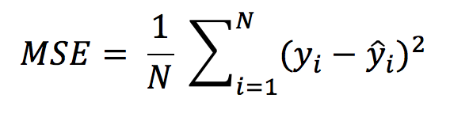
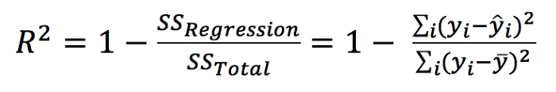
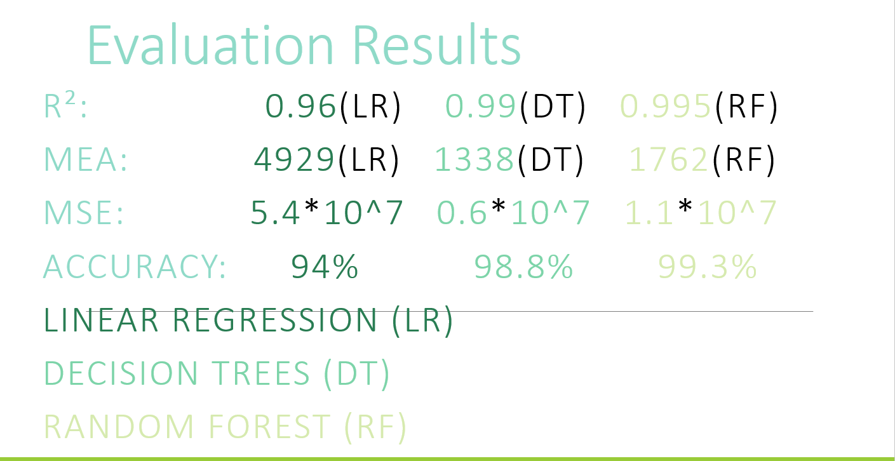

Evaluation Metrics
In Machine Learning, the evaluation is vital to compare the performance of each and every model. There is a wide selection of metrics to choose from but only a small fraction suits for regression problems such as ours. We used 3 different metrics to rate the model predictions upon how close they are to the real values.
1. Mean Squared Error
-
We will use the Linear Regression model to understand how our metric works. The model gave us a line (Blue) as output which predicts the results (Green Squares). Because it is very unlikely that the ideal line is found which matches the values perfectly, we have to calculate the deviation by measuring the vertical distance between our real value and the line.

-
MSE is calculated by the sum of square of prediction error which is real output minus predicted output and then divide by the number of data points. It gives you an absolute number on how much your predicted results deviate from the actual number.

2. Mean Absolute Error
-
Mean Absolute Error(MAE) is similar to Mean Square Error(MSE). However, instead of the sum of square of error in MSE, MAE is taking the sum of the absolute value of error.
MSE gives larger penalization to big prediction error by square it while MAE treats all errors the same.

3. R² / Adjusted R²
-
R Square is calculated by the sum of squared of prediction error divided by the total sum of the square which replaces the calculated prediction with mean. R Square value is between 0 to 1 and a bigger value indicates a better fit between prediction and actual value. Imagine you draw a horizontal line through all the values such that the total deviation is minimized. Now we compare that sum to the sum of the total distance to our calculated line and subtract the quotient of these two values from 1. If our line predicts the values far better than the horizontal line the subtractive should be small and our R² value close to 1.

Final Results
- Following shoes the results for the models implemented:
